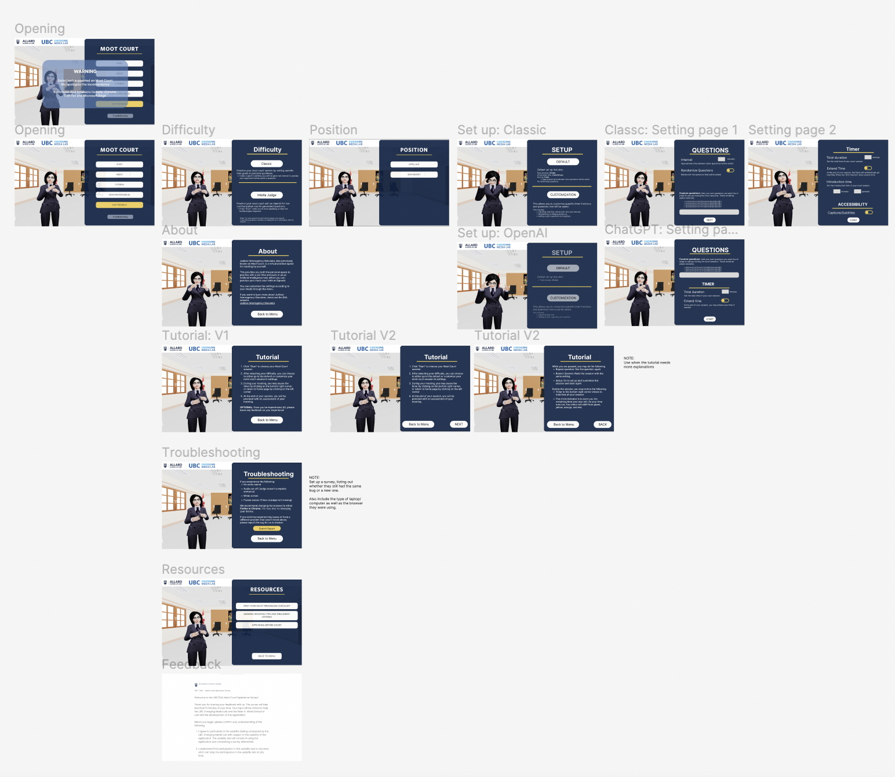
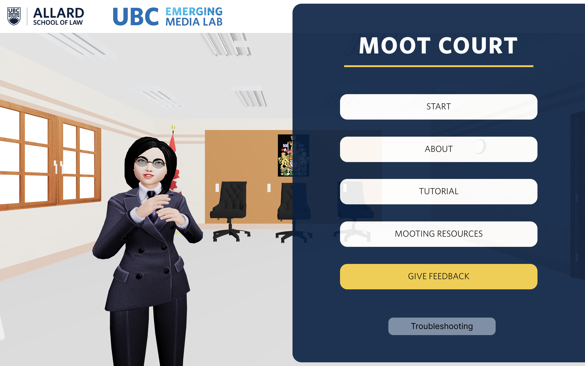
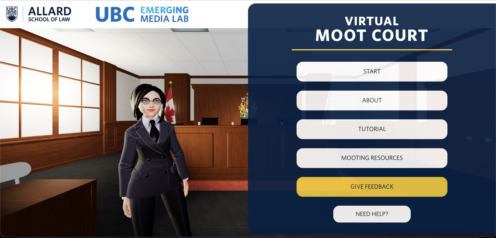
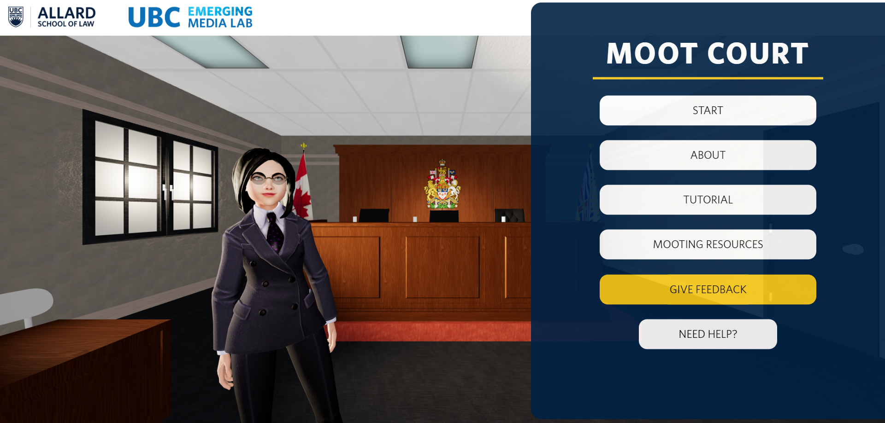
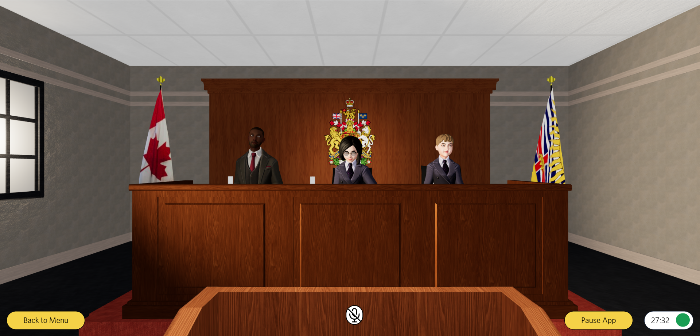

3D (Maya, Blender)
Motion/Animation
UX/UI Design
GROUP-TASK (EML)
Summer, 2023 (3 Months)

I worked on Judicial Interrogatory Simulator led by Emerging Media Lab. This is a AI web application that simulates a courtroom session with an AI judge for first-year law students to prepare for their Moot Court. I was the team leader and participated as UI/UX designer. I led the team from organizing and following the agile process, and worked on improving the user flow and the UI designs.
When I was assigned on this project, it was already built in regards of basic functionality and user-interface. But, our team wanted to improve the project by implementing an AI judge so the students would be able to interact in real-time. With the new implementation of the AI feature, I wanted to maintain the current built function with the overall UI and incorporate our new feauture while improving the UI.
Firstly, I worked on updating the user-flow, with the new integrated feature. And improved on the UI by adding new user-states.
- 
-

Figma UI Flow & Final Web-Flow
-

Landing Page: Idle Motion
-

In-Court: talking, nodding, listening, reading, writing motions
I made additonal improvements to the judge's movement. Before the movements were limited to talking with simple motions and static position. I integrated more motions to idle, talking, nodding, disgreement, reading, writing, and drinking. All these motions were integrated with the judge, so it iterates through the motions while listening and starts talking motion when it is speaking.
I used Rokoko AI Motion Capture and Blender to add the motion and smooth out the animations.
Another improvement, I did were changing the courtroom. The PI's originally wanted keep the room similar to a classroom with elements of a courtroom (podium, flags, Coat of arms) as their mootcourts are held in classes. Though the room lacked dimensions and lighting that provides the immersion.
- 
-

Original Layout
Therefore, I created two environments: Classroom Version and Courtroom version. Both maintaining the elements needed in the moot court, while providing two environments for moot court session. Both room, involved working on the lightning and texture rendering to provide that realisim but not impededing the user's focus and rendering capacity.
- 
-

Courtroom Version
- 
- 
Classroom Version
More Information
Click on the link below to read more on Judicial Interrogatory Simulator by Emerging Media Lab